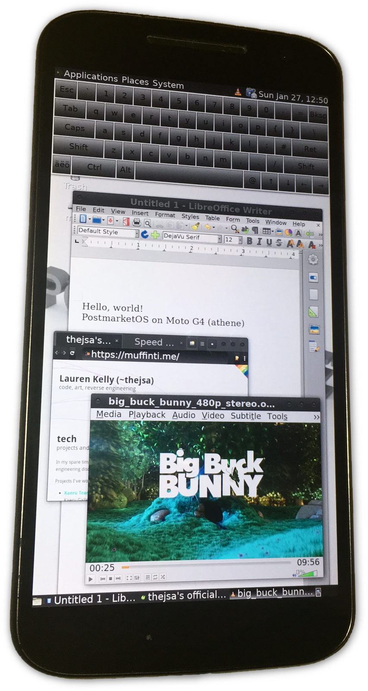
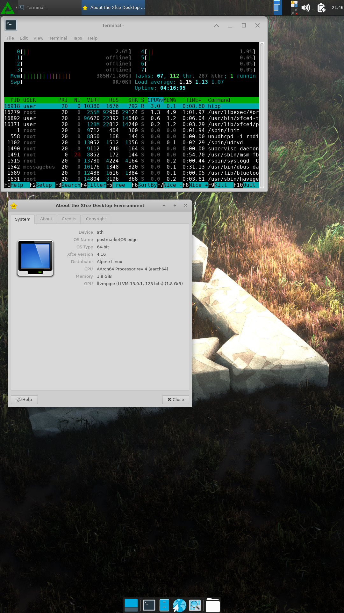

Motorola Moto G4 (motorola-athene)
|

Moto G4 |
|
| Manufacturer | Motorola |
|---|---|
| Name | Moto G4 |
| Codename | motorola-athene |
| Released | 2016 |
| Category | testing |
| Original software | Android 6.0.1 |
| postmarketOS kernel | 3.10.108 |
| Hardware | |
| Chipset | Qualcomm MSM8952 Snapdragon 617 |
| CPU | 4x 1.6 GHz + 4x 1.2 GHz Cortex-A53 |
| GPU | Adreno 405 |
| Display | 1080 x 1920 |
| Storage | 16/32 GB |
| Memory | 2/3 GB |
| Architecture | aarch64 |
| Unixbench Whet/Dhry score | 2621.7 |
{kind=link}
| USB Networking |
Works
|
|---|---|
| Flashing |
Partial
|
| Touchscreen |
Works
|
| Display |
Works
|
| WiFi |
Works
|
| FDE |
|
| Mainline |
|
| Battery |
Works
|
| 3D Acceleration |
|
| Audio |
Broken
|
| Bluetooth |
|
| Camera |
|
| GPS |
|
| Mobile data |
|
| SMS |
|
| Calls |
|
| USB OTG |
|
| NFC |
|
| Accelerometer |
|
|---|---|
| Magnetometer |
|
| Ambient Light |
|
| Proximity |
|
| Hall Effect |
|
| Barometer |
|
| Power Sensor |
|
| Keyboard |
|
|---|---|
| Touchpad |
|
| USB-A |
|
| HDMI/DP |
|
| Ir TX |
|
| TrustZone |
|
| FOSS bootloader |
|
Contributors
- fengjiongmax
- thejsa
Users owning this device
- Coatlessali
- Fengjiongmax ( Notes: uart solder pads ruined by my poor soldering skill)
- GrantM11235
- Nobodywasishere ( Notes: XT1625)
How to enter flash mode
- Power + Volume Down buttons
Installation
$ pmbootstrap flasher flash_rootfs
$ pmbootstrap flasher boot
Problems
- Firmware issues
- kernel partition can't be flashed because the boot partition is not big enough
- Loading the adsp subsystem works momentarily before crashing the device
- Loading the modem subsystem works momentaily before crashing the device
Firmware issues
Log from dmesg:
68.992082] subsys-pil-tz 1de0000.qcom,venus: venus: Failed to locate venus.mdt
[ 68.992096] msm_vidc: err: Failed to download firmware
[ 68.992976] msm_vidc: err: Failed to load video firmware
[ 68.993000] msm_vidc: err: msm_comm_init_core - firmware loading failed
[ 68.993007] msm_vidc: err: Failed to move from state: 1 to 2
[ 68.993012] msm_vidc: err: Failed to move video instance to init state
[ 68.993080] msm_vidc: err: Failed to create video instance, core: 0, type = 0
Hardware details
hwtest
output
| Category | Model | Path | Status | Value |
|---|---|---|---|---|
| framebuffer | mdssfb_90000 | /sys/class/graphics/fb0 | Working | U:1080x1920p-0 |
| framebuffer | mdssfb_a0000 | /sys/class/graphics/fb1 | Working | |
| input | gpio-keys | /dev/input/event7 | Working | |
| input | qpnp_pon | /dev/input/event6 | Working | |
| input | qwerty | /dev/input/event5 | Working | |
| input | Rear proximity sensor | /dev/input/event4 | Working | |
| input | light | /dev/input/event3 | Working | |
| input | synaptics_dsx_i2c | /dev/input/event2 | Working | |
| input | input_mt_wrapper | /dev/input/event1 | Working | |
| input | sensorprocessor | /dev/input/event0 | Working |
For comparison, results from
test_sensors
on obsolete
sailfishOS
version 3.0.0.8 running kernel 3.10.84:
Hardware module ID: sensors
Hardware module Name: Motorola Sensors Module
Hardware module Author: Motorola
Hardware module API version: 0x1
Hardware HAL API version: 0x0
Poll device version: 0x1030001
API VERSION 0.1 (legacy): 0x1
API VERSION 0.1: 0x65537
API VERSION 1.0: 0x16777217
API VERSION 1.1: 0x16842753
API VERSION 1.2: 0x16908289
API VERSION 1.3: 0x16973825
API VERSION 1.4: 0x17039361
Got 19 sensors
=== Sensor 0 ==
Name: 3-axis Accelerometer
Vendor: Bosch
Version: 0x1
Handle: 0x1
Type: 1
maxRange: 157
resolution: 0
power: 1 mA
minDelay: 10000
=== Sensor 1 ==
Name: 3-axis Gyroscope
Vendor: Bosch
Version: 0x1
Handle: 0x2
Type: 4
maxRange: 2000
resolution: 0
power: 1 mA
minDelay: 5000
=== Sensor 2 ==
Name: 3-axis Uncalibrated Gyroscope
Vendor: Bosch
Version: 0x1
Handle: 0x3
Type: 16
maxRange: 2000
resolution: 0
power: 1 mA
minDelay: 5000
=== Sensor 3 ==
Name: Game Rotation Vector
Vendor: Motorola
Version: 0x1
Handle: 0x4
Type: 15
maxRange: 1
resolution: 0
power: 2 mA
minDelay: 5000
=== Sensor 4 ==
Name: Gravity
Vendor: Motorola
Version: 0x1
Handle: 0x5
Type: 9
maxRange: 10
resolution: 0
power: 2 mA
minDelay: 10000
=== Sensor 5 ==
Name: Linear Acceleration
Vendor: Motorola
Version: 0x1
Handle: 0x6
Type: 10
maxRange: 157
resolution: 0
power: 2 mA
minDelay: 10000
=== Sensor 6 ==
Name: Step Detector sensor
Vendor: Bosch
Version: 0x1
Handle: 0x11
Type: 18
maxRange: 1
resolution: 0
power: 0 mA
minDelay: 0
=== Sensor 7 ==
Name: Step Counter sensor
Vendor: Bosch
Version: 0x1
Handle: 0x12
Type: 19
maxRange: 340282346638528859811704183484516925440
resolution: 0
power: 0 mA
minDelay: 1000000
=== Sensor 8 ==
Name: Ambient Light sensor
Vendor: TAOS
Version: 0x1
Handle: 0x7
Type: 5
maxRange: 65535
resolution: 1
power: 0 mA
minDelay: 0
=== Sensor 9 ==
Name: Proximity sensor
Vendor: TAOS
Version: 0x1
Handle: 0x8
Type: 8
maxRange: 100
resolution: 100
power: 0 mA
minDelay: 0
=== Sensor 10 ==
Name: Display Rotation sensor
Vendor: Motorola
Version: 0x1
Handle: 0x9
Type: 65536
maxRange: 4
resolution: 1
power: 1 mA
minDelay: 0
=== Sensor 11 ==
Name: Flat Up
Vendor: Motorola
Version: 0x1
Handle: 0xa
Type: 65537
maxRange: 1
resolution: 1
power: 1 mA
minDelay: 0
=== Sensor 12 ==
Name: Flat Down
Vendor: Motorola
Version: 0x1
Handle: 0xb
Type: 65538
maxRange: 1
resolution: 1
power: 1 mA
minDelay: 0
=== Sensor 13 ==
Name: Stowed
Vendor: Motorola
Version: 0x1
Handle: 0xc
Type: 65539
maxRange: 1
resolution: 1
power: 0 mA
minDelay: 0
=== Sensor 14 ==
Name: Camera Activation sensor
Vendor: Motorola
Version: 0x1
Handle: 0xd
Type: 65540
maxRange: 1
resolution: 1
power: 1 mA
minDelay: 0
=== Sensor 15 ==
Name: ChopChop Gesture
Vendor: Motorola
Version: 0x1
Handle: 0xf
Type: 65546
maxRange: 1
resolution: 1
power: 1 mA
minDelay: 0
=== Sensor 16 ==
Name: Rear Proximity sensor
Vendor: Motorola
Version: 0x1
Handle: 0x10
Type: 8
maxRange: 100
resolution: 100
power: 0 mA
minDelay: 0
=== Sensor 17 ==
Name: Glance Gesture
Vendor: Motorola
Version: 0x1
Handle: 0x13
Type: 24
maxRange: 1
resolution: 1
power: 1 mA
minDelay: -1
=== Sensor 18 ==
Name: Moto Glance Gesture
Vendor: Motorola
Version: 0x1
Handle: 0x14
Type: 65548
maxRange: 1
resolution: 1
power: 1 mA
minDelay: -1
CPU tuning
For unknown reasons, the default configuration boots only 5 cpus,
boot_cpus=0,4,5,6,7
. This boots only one of the 1.65 GHz cores, and the four 1.21 GHz cores. This can be shown via
cpufreq-info
(package cpufrequtils), or
htop
.
The default governor is
battery-draining
"performance".
To utilize all cores, extract and edit (or update)
bootimg.cfg
from
boot.img
to use
boot_cpus=0-7
. Boot the new image via
fastboot boot boot.img
. Alternatively, edit
deviceinfo
and repeat
pmbootstrap install
. This configuration will boot the 4x 1.65 GHz cores as cpus 0-3 and the 4x 1.21 GHz cores as cpus 4-7.
The governor for each quad is assigned separately:
sudo cpufreq-set -c 0 -r -g ondemand
sudo cpufreq-set -c 4 -r -g ondemand
This change does not persist across reboots.
ubench results
| boot_cpus | governor | ubench | comment | |
|---|---|---|---|---|
| 0,4,5,6,7 | performance | 1470.9 | nominal | |
| 0,4,5,6,7 | ondemand | 1473.7 | change governor only | |
| 0-7 | performance | 2619.3 | change boot_cpus only | |
| 0-7 | ondemand | 2621.7 | change both |
Photos
| 
{kind=link}
See also
- !1412 initial PR
- #1401 initial port issue
- Device package
- Kernel package